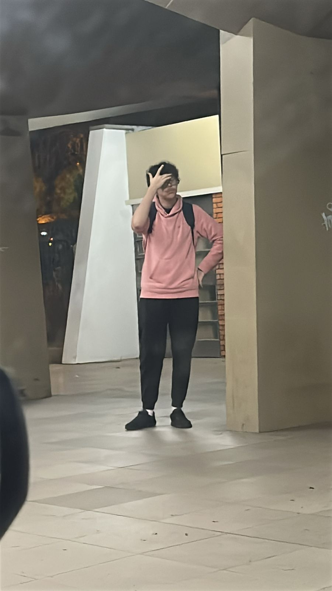
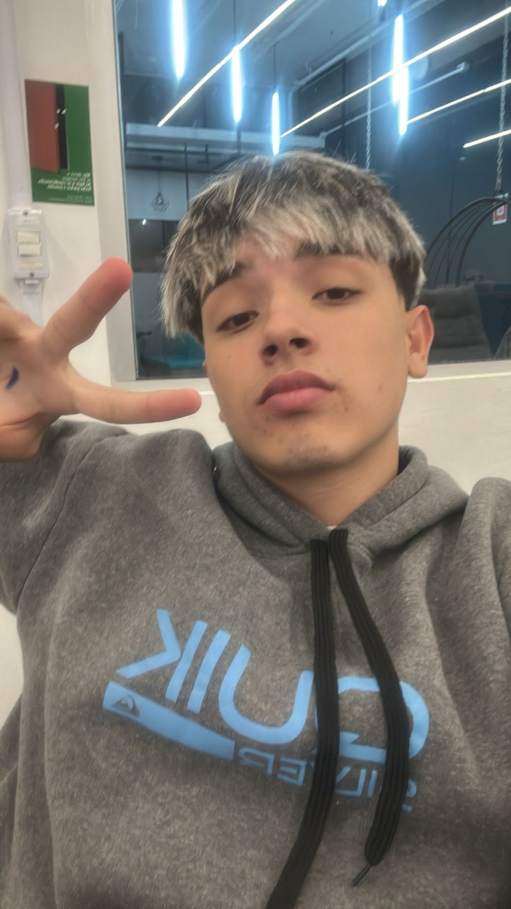

Sobre Mim
Me chamo Éverton, tenho 16 anos e faço 17 em janeiro (18/01/2009). Moro no bairro da Vicentina e estudo na Escola Villa Lobos, no centro da cidade. Atualmente, também curso Desenvolvimento de Sistemas no Senac, onde estou finalizando a UC11 e em breve iniciarei a UC12. Meu objetivo é concluir a formação, adquirir novas experiências e, no futuro, talvez ingressar no Exército.
Imagens
 Lugares que eu gostaria de visitar 🌍
- Espanha
- Estádio do Beira-Rio
- Pão de Açúcar